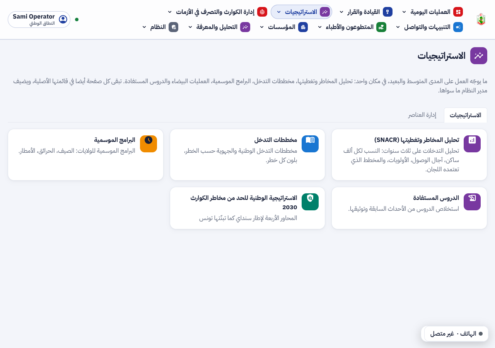
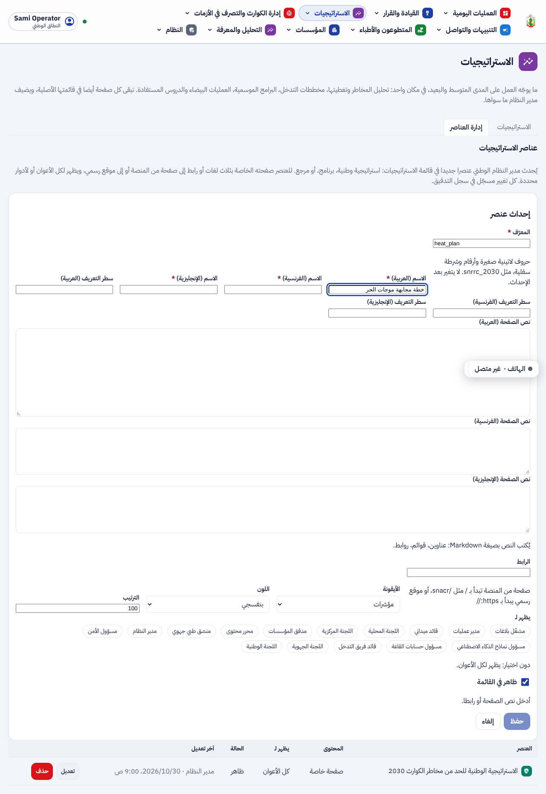
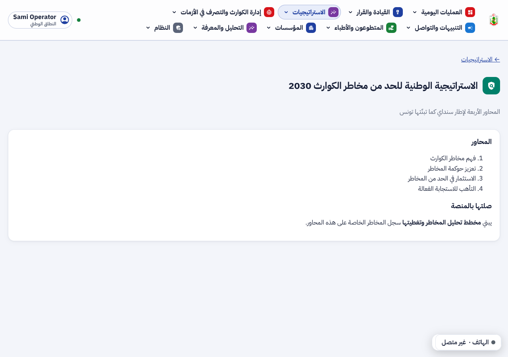
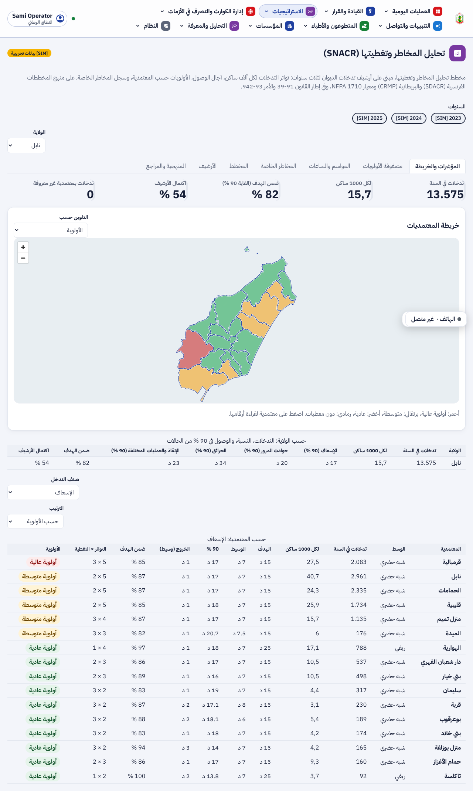
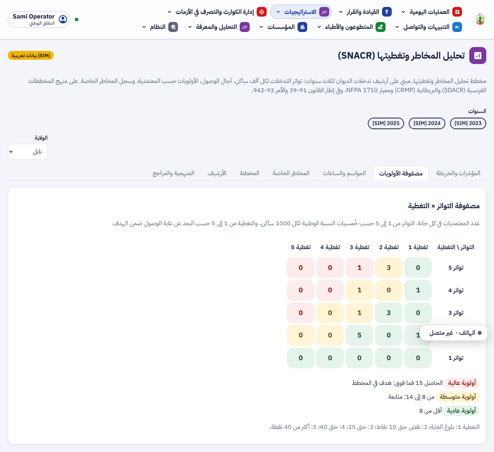
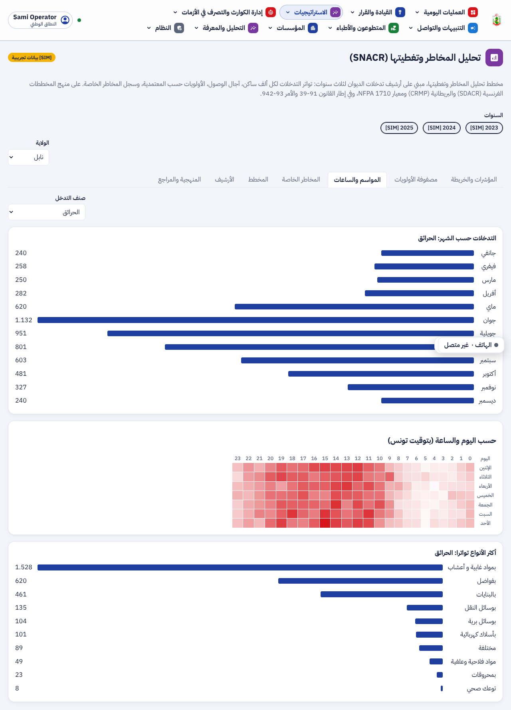
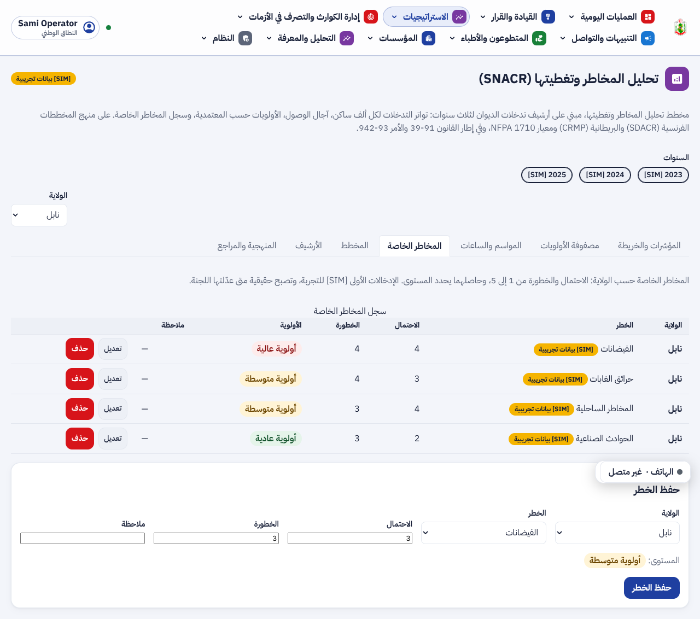
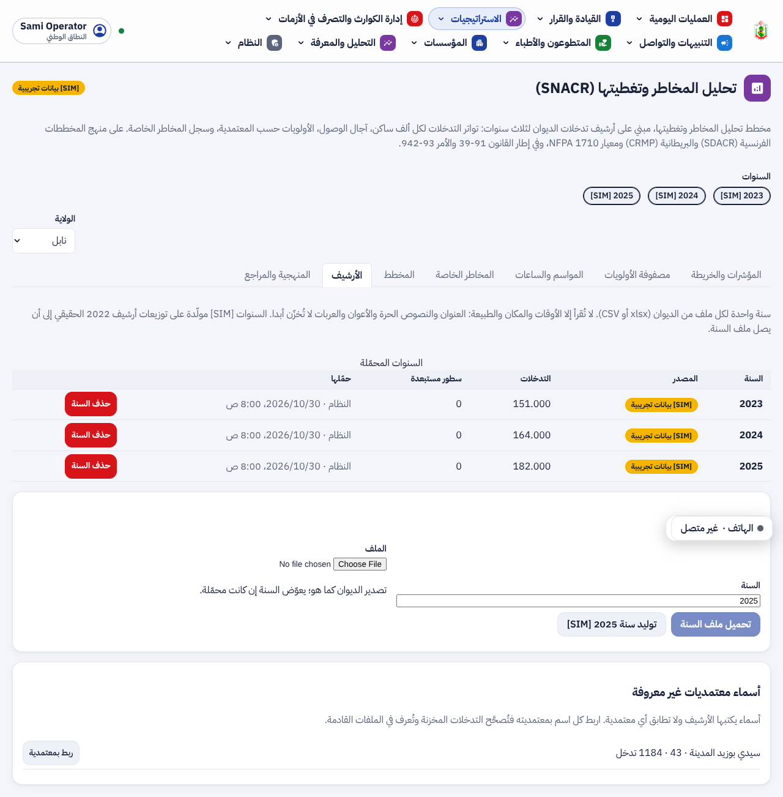
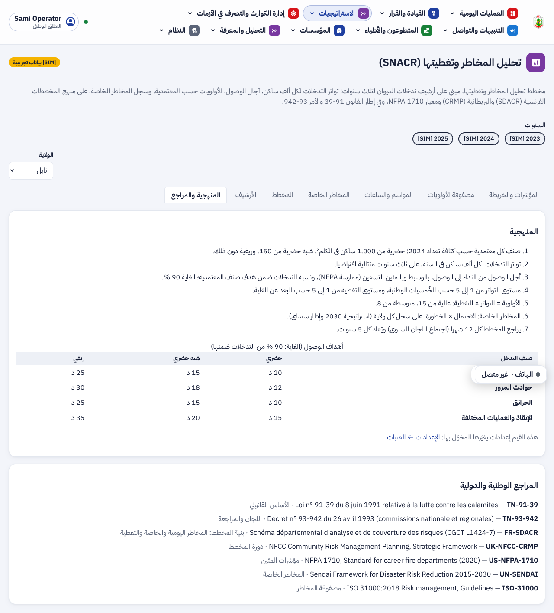

ء-حماية e-Himaya
تقرير المرحلة S: محور الاستراتيجيات ومخطط تحليل المخاطر وتغطيتها (SNACR). أرشيف تدخلات الديوان لثلاث سنوات، المؤشرات والمصفوفة والخريطة، المخاطر الخاصة، المخطط واعتماده، المراجع المحلية والدولية، وعناصر يُحدثها مدير النظام.
1. أين تقع هذه المرحلة من مسار المشروع
التبليغ
←
المعالجة
←
التحليل
←
مؤشرات الأداء KPI
←
التنبؤ بالذكاء الاصطناعي
←
اتخاذ القرار
- التحليل: أرشيف الديوان يصير معطيات نظيفة لكل معتمدية، مربوطة بمرجع المعهد الوطني للإحصاء وبتعداد 2024.
- مؤشرات الأداء: النسبة لكل 1000 ساكن، الوصول بالوسيط والمئين 90، نسبة التدخلات ضمن الهدف، واكتمال الأرشيف.
- اتخاذ القرار: المصفوفة تحدد المعتمديات ذات الأولوية، واللجنة تعدّ المخطط وتعتمده.
2. مراجعة ← تصميم ← تطوير
الطلبات: المرحلة 2 من الخطة (المرادفات، 3 سنوات [SIM]، المؤشرات والأهداف، المصفوفة، التغطية، مسودة المخطط)؛ الاعتماد على دراسات محلية ودولية؛ محور «الاستراتيجيات» يضم SNACR والمخططات والعمليات البيضاء والدروس المستفادة دون سحبها من مواضعها؛ وإحداث عناصر فيه بيد مدير النظام.
حماية المعطيات: من ملف الديوان تُقرأ ثمانية أعمدة فقط: الأوقات والمكان والطبيعة. العنوان والنصوص الحرة والأعوان والعربات لا تُخزّن، واختبار يتحقق من ذلك. الملفات الخام تبقى خارج المستودع، ولا يُنشر إلا المجمّع. الحساب الجهوي يرى ولايته فقط.
SNACR
- الأرشيف (الترحيل 0084): تحميل ملف السنة، وتصنيف الطبيعة في أربع عائلات، وربط المعتمدية، وتعليم الأوقات الناقصة والشاذة. 88,4 % من أسماء 2022 تُعرف كما هي، والبقية بـ25 اسما بديلا وبالمقارنة المخففة.
- السنوات [SIM] من 2023 إلى 2025 (497.000 تدخل) مولّدة على مجاميع 2022 الحقيقية، في 45 ثانية.
- المؤشرات حسب العائلة وصنف المعتمدية، والمصفوفة 5 × 5، والخريطة الملوّنة بالأولوية أو النسبة أو الوصول أو الاكتمال.
- سجل المخاطر الخاصة (9 أصناف)، والمخطط بنسخه واعتماده ووثيقته PDF من 8 فصول.
- 19 عتبة جديدة في الإعدادات: الأهداف، الغاية، الكثافتان، المراجعة والصلاحية.
محور الاستراتيجيات
- مجموعة جديدة في القائمة: كل الاستراتيجيات، SNACR، مخططات التدخل، البرامج الموسمية، العملية البيضاء، الدروس المستفادة. كل صفحة باقية في مجموعتها الأصلية.
- عناصر يُحدثها مدير النظام الوطني (الترحيل 0085): صفحة بثلاث لغات أو رابط، لكل الأعوان أو لأدوار محددة، في سجل التدقيق.
3. لقطات [SIM]
محور الاستراتيجيات، وفيه عنصر أضافه مدير النظام:

مدير النظام يُحدث عنصرا جديدا:

صفحة العنصر:

SNACR لولاية نابل على السنوات [SIM] 2023 إلى 2025: المؤشرات، وخريطة المعتمديات حسب الأولوية، والجداول:

مصفوفة التواتر × التغطية:

المواسم والساعات:

سجل المخاطر الخاصة:

الأرشيف والأسماء غير المعروفة:

المنهجية والمراجع:

4. التقدم لكل جزء
| البند | الحالة | التقدم |
|---|
| الأرشيف والتنظيف والأسماء البديلة (F-SRV-52) | منجز |
|
| ثلاث سنوات [SIM] (F-SRV-53) | منجز |
|
| المؤشرات والأهداف والتغطية والمصفوفة (F-SRV-54، F-DSH-115) | منجز |
|
| المخاطر الخاصة ومسودة المخطط واعتماده ووثيقته (F-SRV-55) | منجز |
|
| المراجع المحلية والدولية في المنهجية والواجهة والوثيقة | منجز |
|
| محور الاستراتيجيات (F-DSH-113) | منجز |
|
| عناصر مدير النظام (F-DSH-114، F-SRV-56) | منجز |
|
| ملفات الديوان الحقيقية 2023 إلى 2025 | ينتظر الديوان |
|
تقدم المرحلة S: 100%. تعوّض ملفات الديوان السنوات [SIM] متى وصلت، دون تغيير في الشيفرة.
5. المحاكاة [SIM]
- [SIM] السنوات 2023 و2024 و2025 مولّدة على مجاميع أرشيف 2022 الحقيقي. أرقامها مرتبطة بالواقع، لكنها ليست تدخلات حدثت.
- [SIM] 35 خطرا خاصا مزروعة للتجربة، تصحّحها اللجان.
- [SIM] عنصر «الاستراتيجية الوطنية 2030» في اللقطات مثال أدخله الاختبار.
6. الاختبارات المطبقة
| المكوّن | العدد | النتيجة |
|---|
| الخلفية (pytest) | 1137 (وتخطّي 2)، منها test_snacr.py (6) و test_strategies.py و test_features.py | كلها ناجحة على قاعدة جديدة |
| الترحيلات | من قاعدة فارغة حتى 0084، ثم 0085 صعودا ونزولا وصعودا | ناجحة |
| لوحة القيادة (vitest) | 632، منها Strategies.test.tsx (6) | كلها ناجحة |
| لوحة القيادة (Playwright) | 100، منها phase-s.spec.ts (2) | الجديدة ناجحة محليا، والكل في CI |
ruff و mypy و eslint و tsc -b، و OpenAPI و ERD | — | لا ملاحظة |
- لا عنوان ولا اسم ولا رقم هاتف من ملف الديوان في الجداول بعد التحميل.
- الاسم البديل يصحّح التدخلات المخزنة، والاسم المكرر يُرفض (409).
- الحساب الجهوي يقرأ ولايته فقط ويعدّل سجلها فقط، ويعتمد مخططها وحده.
- عنصر الاستراتيجيات: مدير نظام جهوي أو لجنة وطنية يُرفضان (403)، والرابط
javascript: يُرفض (422).
8. المخرجات المحيَّنة
- الملف الوصفي V29 (docx و pdf) في
spec/: F-DSH-113 إلى 115، F-SRV-52 إلى 56، 585 مسارا و709 عمليات، 85 ترحيلا، الاختبارات، وخارطة الطريق.
- مخططات UML في
diagrams/: صنف SNACR ومحور الاستراتيجيات (2c)، الأرشيف والتحليل (7h)، المخطط واعتماده (7i)، عنصر الاستراتيجيات (7j)، وخمس حالات استعمال. ومعها نسخ .puml و .wsd لكل المخططات (81).
- العرض للمسؤولين في
presentation/: 51 مرحلة والاختبارات.
- مرجع التصميم: لا لون ولا أيقونة جديدة.
- وثيقة التصميم design-s.md واللقطات في
screens/s/، والقائمة المؤجلة (§3.11).
9. ملاحظات وانحرافات
- «سيدي بوزيد المدينة» لا يُعرف من الأرشيف هل يقصد الشرقية أم الغربية. يبقى للربط اليدوي من قسم الأرشيف.
- اكتمال الأرشيف نحو 55 % في 2022: نصف التدخلات تقريبا ينقصها وقت الوصول. يدخل ذلك هدفا في المخطط («المعطيات») ولا يُخفى.
- الأهداف بالدقائق مقترحة على منهج NFPA وSDACR. تعدّلها اللجنة الوطنية من الإعدادات متى قررت أهدافها.
10. ما يلي
الدمج، ثم المرحلة 3 (ملف العرض، إنذار صاحب المؤسسة، التحسينات الصغيرة)، ثم الوثائق والأمن وكراس الشروط، ثم وثائق الإنتاج، ثم دراسة اللجنة وأسئلتها.